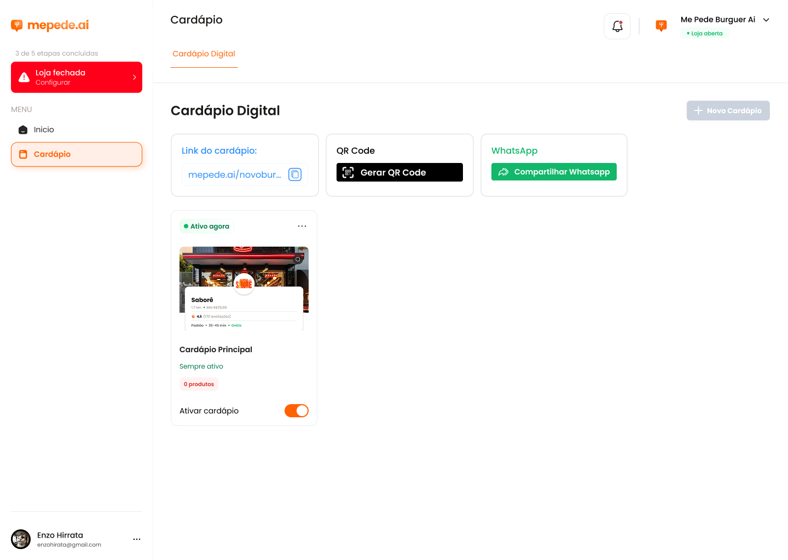
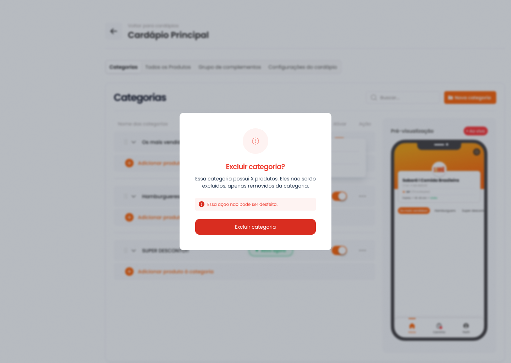
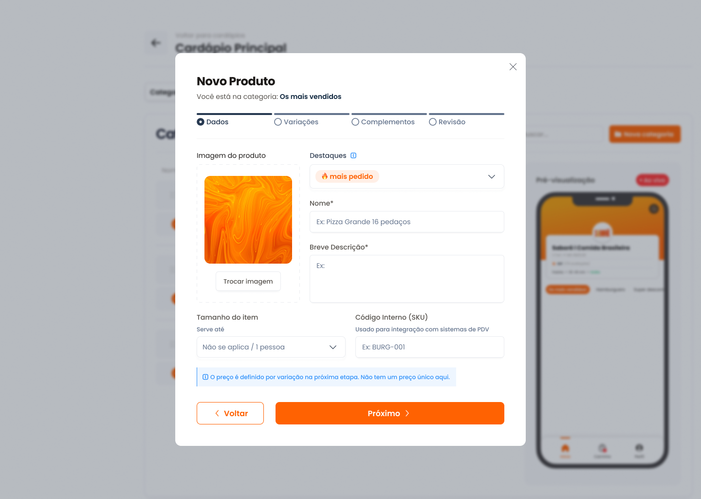
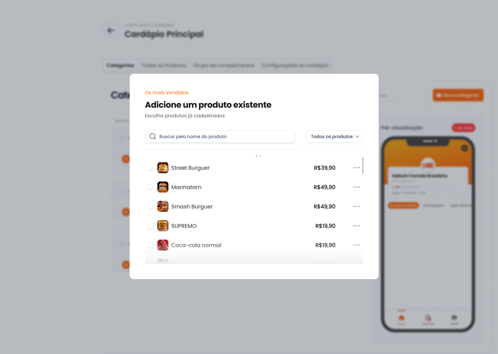

mepede.ai · Painel de Cardápio · Redesign 2026
O que mudou no painel
O cardápio mobile ficou igual. O painel foi completamente refeito para o dono do foodtruck montar o cardápio sem se perder: menos telas, menos janelas e prévia interativa ao vivo no celular em tempo real.
6 → 1
telas para criar um produto (tipo + 4–5 etapas → formulário único com rolagem)
0
janelas por cima de janelas (antes: modal sobreposto por gaveta lateral)
Sempre
prévia do celular visível e interativa, inclusive durante a edição do lanche
Desfazer
em toda exclusão, substituindo alertas punitivos de “não pode ser desfeito”

01 · ESTRUTURA
Uma tela de trabalho, não uma lista de cardápios
✕ Antes
- Entrar em “Cardápio Digital”, depois abrir o cardápio, depois escolher entre 4–5 abas desconexas.
- Link, QR Code e WhatsApp ficavam restritos apenas à primeira tela.
- Botão “Novo Cardápio” desabilitado sem explicação do motivo.
✓ Agora
- Abre direto no cardápio de trabalho. As abas viraram o menu lateral principal: Cardápio, Complementos, Loja e link.
- Link com 1-clique para copiar, QR Code instantâneo e botão WhatsApp fixos no topo em qualquer tela.
- Interruptor “Loja aberta / fechada” direto no menu lateral — reflete no smartphone no mesmo segundo.
- Checklist com progresso visual clicável: cada etapa pendente leva direto à ação correspondente.


02 · CATEGORIAS E PRODUTOS
Categorias e produtos unificados na mesma tela
✕ Antes
- Duas abas separadas (“Categorias” e “Todos os produtos”) para gerenciar os mesmos dados.
- Lista em tabela fria, sem fotos grandes — difícil identificar itens sem imagem ou sem descrição.
- Prévia do celular estática e presente apenas na aba Categorias.
✓ Agora
- Barra de categorias em chips dinâmicos (“Todos” + cada categoria com contagem e status). Clicar filtra os produtos na grade e navega o celular simultaneamente.
- Produtos em cards modernos com foto grande, preço, desconto, complementos e interruptor “Visível”.
- Itens sem foto ganham botão de destaque “Adicionar foto”; itens sem categoria avisam com clareza que estão ocultos do cliente.
- Reordenação intuitiva de categorias (← →), busca instantânea e produto associável a múltiplas categorias.


03 · CRIAR CATEGORIA
Criar categoria em um passo simplificado
✕ Antes
- Modal burocrático com nome + 3 opções de disponibilidade já no primeiro instante.
- “Não disponível no momento” duplicava a função do interruptor “Ativar”.
- Exclusão bloqueava a tela com mensagem intimidadora de “Essa ação não pode ser desfeita”.
✓ Agora
- “+ Nova categoria”: digite o nome e aperte Enter. No cardápio vazio, sugestões inteligentes de 1 clique (Lanches, Bebidas, Combos, Sobremesas).
- Horários de atendimento configurados em aba dedicada: Sempre ou Dias e horários com status em tempo real.
- Exclusão simplificada que mantém os produtos salvos e permite Desfazer imediatamente via toast.


04 · CRIAR PRODUTO
De assistente em etapas para formulário com prévia ao vivo
✕ Antes
- Obrigatoriedade de escolher “Simples” ou “Com variação” antes de tudo — mudando arbitrariamente o número de passos (3 ou 4 etapas).
- Navegação de vai-e-volta entre etapas; o resultado final só podia ser conferido ao salvar.
- Modal centralizado cobria completamente a tela do celular.
✓ Agora
- Gaveta lateral elegante com 4 seções contínuas: Básico, Preço, Complementos e Visibilidade.
- Tipo de produto simplificado: Preço único ou Varia por tamanho/tipo alternável com 1 clique a qualquer instante.
- Prévia imediata no smartphone: a foto, selo/destaque, preço e complementos são renderizados no iPhone ao vivo conforme você digita.
- Cálculo automático de porcentagem de desconto com base no preço de comparação.
- Validação visual amigável que aponta exatamente os campos pendentes.


05 · COMPLEMENTOS
Complementos sem janela dentro de janela
✕ Antes
- Criar uma opção abria um painel lateral empilhado em cima do modal do produto.
- Terminologia técnica fria (“Qtde mínima / máxima”) sem clareza do que o cliente leria.
- Lista interminável de complementos misturados.
✓ Agora
- No próprio produto: “Usar da biblioteca” ou “Criar novo grupo” com opções diretas em linhas de nome + valor.
- Regras em linguagem natural: Opcional / Obrigatório com a frase exata que o cliente lê na tela.
- Reorganização de ordem com setas e biblioteca centralizada com contagem de produtos vinculados.
- O smartphone simula as regras fielmente: valida escolhas mínimas e calcula o subtotal instantaneamente.
06 · VÁRIOS CARDÁPIOS
Múltiplos cardápios sem troca de contexto
✕ Antes
- Tela isolada exclusiva para listagem de cardápios.
- Falta de transparência sobre qual cardápio ficava visível em cada turno ou dia.
✓ Agora
- Cards “Seus cardápios” no topo do painel com horário de vigência, status e contagem de itens. Clicar troca o cardápio em edição e a prévia do celular em tempo real.
- Criação flexível: começar do zero ou duplicar a estrutura de categorias existente.
- Selo visual indicativo de qual cardápio está no ar agora no link único do foodtruck.

07 · PRÉVIA E DETALHES
Smartphone 100% interativo e simulação real de pedidos
- Smartphone funcional: alterne abas, clique no lanche, personalize complementos, ajuste a quantidade, adicione à sacola e simule a finalização de pedido direto para o WhatsApp.
- Gestão de loja com taxa de entrega, tempo estimado e pedido mínimo refletidos no cabeçalho do smartphone.
- Suporte completo para iniciar do zero no tour guiado interativo ou restaurar dados de exemplo a qualquer momento.